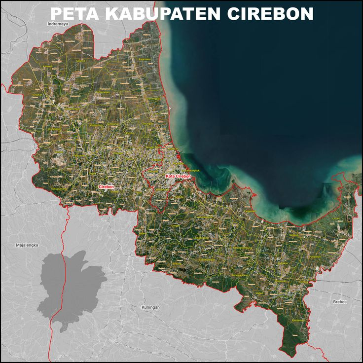

Cirebon
Cirebon is a city and also a regency in West Java Province, Indonesia, located on the northern coast of Java Island. The city is known as the "City of Wali" for its role in the spread of Islam in the archipelago, as well as the "City of Shrimp." Cirebon serves as a meeting point of Javanese and Sundanese cultures
